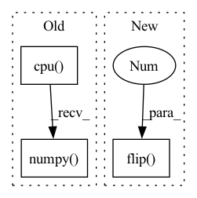

Pattern ID :18592
Before Change
fig, axes = plt.subplots(1, 1, figsize=(12, 4), squeeze=False)
ax = axes[0, 0]
im = ax.imshow(mean_bias.detach().squeeze().cpu().numpy() )
im.set_cmap(cmap=plt.cm.RdBu)
fig.colorbar(im, ax=ax)
ax.set_title("Mean bias [Kelvin]")After Change
inv_normalize = model_module.denormalization
init_condition, gt = inv_normalize(x), inv_normalize(y)
init_condition = np.flip( init_condition.detach().cpu().numpy(), 2 )
pred = inv_normalize(pred)
pred = np.flip(pred.detach().cpu().numpy(), 2)
gt = np.flip(gt.detach().cpu().numpy(), 2)
bias = pred - gt // B, 1, 32, 64In pattern: SUPERPATTERN
Frequency: 3
Non-data size: 3
Instances Fragment ID: 60685261
Project Name: aditya-grover/climate-learn
Commit Name: da02a4f3496c35890c879f72c6b7502159d4b516
Time: 2023-02-21
Author: jason.jewik@ucla.edu
File Name: src/climate_learn/utils/visualize.py
M Class Name: AnonimousClass
N Class Name: AnonimousClass
M Method Name: visualize_mean_bias(3)
N Method Name: visualize_mean_bias(3)
M Parent Class:
N Parent Class:
M File Name: src/climate_learn/utils/visualize.py
N File Name: src/climate_learn/utils/visualize.py
M Start Line: 130
M End Line: 140
N Start Line: 132
N End Line: 146
Before Change
for j in range(nsrc):
ssf = sf[i] * torch.conj(sf[j])
ssf = torch.ifft(torch.view_as_real(ssf), signal_ndim=1)[..., 0]
ss = torch.from_numpy(toeplitz(np.hstack((ssf[0].cpu().numpy(), ssf.cpu().numpy() [-1:-flen:-1])),
r=ssf[:flen].cpu().numpy())).to(ssf.device)
G[i * flen: (i + 1) * flen, j * flen: (j + 1) * flen] = ss
G[j * flen: (j + 1) * flen, i * flen: (i + 1) * flen] = ss.TAfter Change
for j in range(nsrc):
ssf = sf[i] * torch.conj(sf[j])
ssf = torch.ifft(torch.view_as_real(ssf), signal_ndim=1)[..., 0]
ss = toeplitz(torch.cat((ssf[0].unsqueeze(0), ssf.flip(0 ) [0:flen - 1]), dim=0), r=ssf[:flen])
G[i * flen: (i + 1) * flen, j * flen: (j + 1) * flen] = ss
G[j * flen: (j + 1) * flen, i * flen: (i + 1) * flen] = ss.T
// inner products between estimated_source and delayed versions of Fragment ID: 60685269
Project Name: juanfmontesinos/torch_mir_eval
Commit Name: 0978b4e6492613a5efa6051e27c5f85fe0e9ccae
Time: 2020-10-06
Author: juanfelipe.montesinos@upf.edu
File Name: torch_mir_eval/separation.py
M Class Name: AnonimousClass
N Class Name: AnonimousClass
M Method Name: _project(3)
N Method Name: _project(3)
M Parent Class:
N Parent Class:
M File Name: torch_mir_eval/separation.py
N File Name: torch_mir_eval/separation.py
M Start Line: 294
M End Line: 296
N Start Line: 293
N End Line: 294
Before Change
for i, tensor in enumerate([init_condition, gt, pred, bias]):
ax = axes[index][i]
im = ax.imshow(tensor.detach().squeeze().cpu().numpy() )
im.set_cmap(cmap=plt.cm.RdBu)
fig.colorbar(im, ax=ax)
After Change
inv_normalize = model_module.denormalization
init_condition, gt = inv_normalize(x), inv_normalize(y)
init_condition = np.flip( init_condition.detach().cpu().squeeze().numpy(), 0 )
pred = inv_normalize(pred)
pred = np.flip(pred.detach().cpu().squeeze().numpy(), 0)
gt = np.flip(gt.detach().cpu().squeeze().numpy(), 0)
bias = pred - gt Fragment ID: 60685271
Project Name: aditya-grover/climate-learn
Commit Name: da02a4f3496c35890c879f72c6b7502159d4b516
Time: 2023-02-21
Author: jason.jewik@ucla.edu
File Name: src/climate_learn/utils/visualize.py
M Class Name: AnonimousClass
N Class Name: AnonimousClass
M Method Name: visualize(5)
N Method Name: visualize(5)
M Parent Class:
N Parent Class:
M File Name: src/climate_learn/utils/visualize.py
N File Name: src/climate_learn/utils/visualize.py
M Start Line: 74
M End Line: 76
N Start Line: 71
N End Line: 79